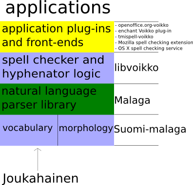

← Back to Index
Voikko
General architecture
Voikko consists of a set of separately released components that form a
stack of layers as illustrated in the picture below.

In this project we develop the components shown with blue background, and
some of the components with yellow background:
- libvoikko
- Libvoikko is the high level library that contains among other things
algorithms that generate spelling suggestions and perform rule based
hyphenation. It is also capable of caching the results of common spell
checking operations to improve performance. All of the grammar checking
is also done within libvoikko. Libvoikko supports few different dictionary
formats some of which require dependencies on other libraries such as hfst-ospell.
The different dictionary formats have distinct version numbers so that it is
possible to have multiple versions of libvoikko installed on the same computer
without problems related to dictionary compatibility.
- voikko-fi (previously Suomi-malaga)
- Voikko-fi is a description of Finnish morphology based on finite state transducer
technology (Foma and VFST). The package contains morpholgies
that are suitable for both spell checking and text indexing.
- libreoffice-voikko
- Libreoffice-voikko is an LibreOffice extension that uses Voikko to provide
Finnish spell checking, hyphenation and grammar checking.
- Enchant Voikko plugin
- Voikko provider plugin for multi-backend Enchant spell checker library
is included in Enchant version 1.4 and later.
- tmispell-voikko
- Tmispell-voikko is an ispell compatible spell checker that uses Voikko to provide
Finnish spell checking and falls back to real ispell for other languages. Tmispell-voikko
was originally written by Pauli Virtanen for the freely distributable but closed source
spell checker Soikko. Tmispell-voikko also contains an Enchant provider plugin for
Enchant version 1.3. Tmispell-voikko is deprecated and not actively developed
anymore. Developers using ispell to add spell checking capability in their
applications should consider switching to Enchant instead.
- Joukahainen
- Joukahainen is our web application used to maintain the vocabulary. Joukahainen is
designed to store and provide vocabulary data in an application independent format which
should make it easier to use and experiment with the data outside the Voikko project.
The reasons for using finite state technology instead of Hunspell
This project started in late 2005 under the name Hunspell-fi, with an aim to create
Finnish vocabulary and affix files for Hunspell. The Hunspell based implementation was developed
roughly six months, and there were no serious problems but it was also evident that the
work progressed rather slowly. In early 2006 Hannu Väisänen published Suomi-malaga, which
contained a vocabulary that was (depending on how one defines "word") roughly ten times
larger than the Hunspell-fi vocabulary at that time. Additionally the Hunspell-fi implementation
did not support compound words and only a few derived word forms, which were both supported
by Suomi-malaga.
Between 2012 and 2015 the morphology was re-written on top of finite state technology
that has become the most widely used tool for computational linguists to model the morphology
of natural languages. The implementation used in Voikko is not a purely finite state solution
but very close to that. From the end user point of view it is very similar to the original
Malaga morphology.
There are major limitations (or at least there have been, some may have been fixed in recent versions) in Hunspell that
make it practically impossible to use as a replacement of for Voikko when processing
Finnish language:
- Hunspell only supports two consecutive suffixes for any word. This is of course a
major improvement compared to ispell or myspell that supported only one. But in Finnish
it is common to have three or more suffixes in a word. This requires merging of
suffixes and in practice some sort of tool has to be created to generate these merged
forms (apparently this method has been used in Hungarian Hunspell dictionaries, so it
is possible). This makes it is impossible to write Hunspell affix files manually and
adds another layer of complexity to the system. Of course having such tool and storing
morphological rules in an application independent format would help converting to other
formats later, which would be a good thing.
- Hunspell has methods for allowing or forbidding certain inflected or derived forms
in compounds. But binary allow/forbid is not enough, we need a method for specifying
compound rules by word class and then specifying that certain derivational suffixes
cause the word to belong to a different class. And this must work recursively
(derived words can be derived too) for at least three levels. Additionally words can
be inflected (in a restricted way) inside compounds too, so this must be supported
as well.
- Hunspell seems to need a lot more memory than libvoikko, especially when multiple
instances are used on the same machine. The total running set size for libvoikko and its
dictionary is about 5 megabytes shared + 0.5 megabytes data per running instance.
Hunspell (Hungarian) consumes 1 megabytes shared + 15 megabytes data per instance.
This would still be acceptable for single user systems, but in a classroom LTSP
server with 20 pupils using LibreOffice the total memory use would be
about 15 megabytes with Voikko and 300 megabytes with Hunspell. If they used
Firefox with spell checking extension at the same time, the numbers would become
25 megabytes for Voikko and 600 megabytes for Hunspell. Using precompiled binary
dictionaries and mmap, or a spelling server would fix this problem in Hunspell, but the
server solution would cause additional security and maintenance issues for the
administrator.
- Voikko is not just a spell checking library. It currently provides morphological analyzer,
grammar checker, hyphenator and string tokeniser as well. Additionally Voikko has many extra options
related to spell checking not found in Hunspell, such as special suggestion mode
for fixing errors introduced during optical character recognition. Hunspell can be used
as a morphological analyzer and some other functionality from libvoikko could be ported there if needed. But other features
(such as hyphenator and grammar checker) would need to be designed differently to make them
language independent for Hunspell. Totally separating hyphenator and spell checker
(as is currently done in most free tools except Voikko) does
not make sense, since both rely on morphological analysis for their operation.
All of the problems above could definitely be solved within Hunspell, but
migh require a lot of work.
Compromising quality just to become compatible with Hunspell is not an option,
because Finnish people have come to expect really good results from their
spell checkers (we have had advanced compound word checking in commercial text
editors for well over ten years).
The latest version of libvoikko is compatible with Hunspell licensing so it would be
possible to merging code between these projects. We are open to consider this but it
should be noted that dictionary formats of libvoikko are still evolving.